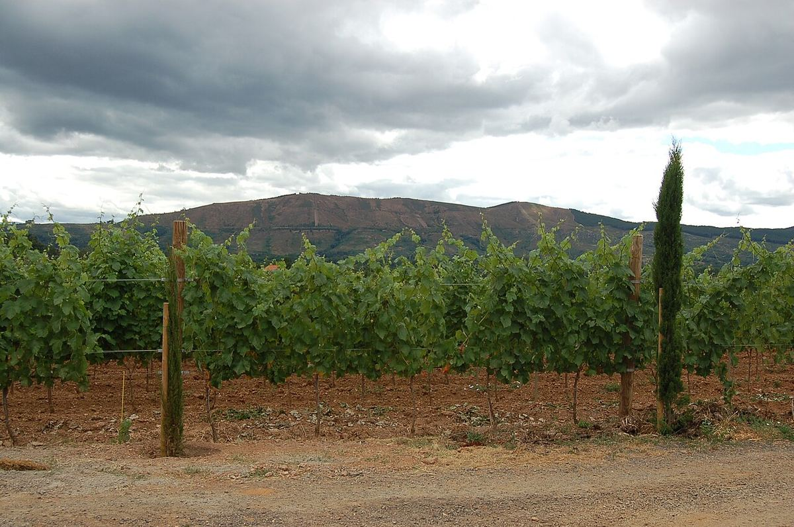

Monterrei
Monterrei es la denominación de origen más meridional y de clima más continental de Galicia, situada en el valle del Támega, en torno a Verín, junto a la frontera portuguesa. Elabora sobre todo blancos de Godello y Treixadura y tintos de Mencía.

Historia
La comarca de Monterrei tiene una larga tradición vitícola, vinculada al castillo y a la fortaleza de Monterrei, que domina el valle desde un cerro cercano a Verín, y a las órdenes religiosas que poseyeron tierras en la zona. Su situación en una ruta histórica entre Galicia, Castilla y Portugal favoreció el comercio de sus vinos. Como en otras zonas gallegas, el viñedo sufrió el impacto de la filoxera y de la emigración durante el siglo XX, y en las últimas décadas del siglo se constituyó la denominación de origen, que ha impulsado la modernización de las bodegas y la recuperación de las variedades autóctonas.
Territorio y subzonas
La denominación se extiende por el valle del río Támega y sus laderas, en el sureste de la provincia de Ourense, en municipios como Verín, Monterrei, Oímbra y Castrelo do Val. Se distinguen dos subzonas: Val de Monterrei, en el fondo del valle, con suelos más profundos, y Ladeira de Monterrei, en las laderas que lo rodean.
Clima
Monterrei tiene el clima más continental de las denominaciones gallegas. Las montañas que la rodean la aíslan en buena parte de la influencia atlántica, de modo que los veranos son cálidos y secos, los inviernos fríos y las precipitaciones menores que en el resto de Galicia. Las heladas de primavera son un riesgo y la oscilación térmica entre el día y la noche es acusada, lo que favorece la conservación de la acidez y de los aromas.
Suelos
En el fondo del valle predominan los suelos sedimentarios, arcillosos y más fértiles, mientras que en las laderas aparecen suelos más pobres de pizarra y granito, con mejor drenaje.
Variedades y estilos
Entre las blancas destacan la Godello y la Treixadura, junto a la Doña Blanca, la Albariño, la Loureira y otras variedades autorizadas. La Mencía es la tinta principal, acompañada de la Merenzao, la Arauxa, nombre local de la Tempranillo, la Sousón y la Caíño. Los blancos, sobre todo los de Godello, son la elaboración más difundida y combinan madurez de fruta con frescura. Los tintos de Mencía suelen ser frutales y de cuerpo medio. Se elaboran vinos jóvenes y otros con crianza sobre lías o en barrica.
Paisaje
El valle del Támega, abierto hacia Portugal, presenta un paisaje de viñedos en ladera alternados con cultivos y bosque, dominado por la silueta de la fortaleza de Monterrei. La comarca de Verín es también conocida por sus manantiales de aguas minerales. La proximidad de Chaves, ya en territorio portugués, recuerda los estrechos vínculos históricos entre ambos lados de la frontera, que comparten el mismo valle y una cultura agrícola muy similar.